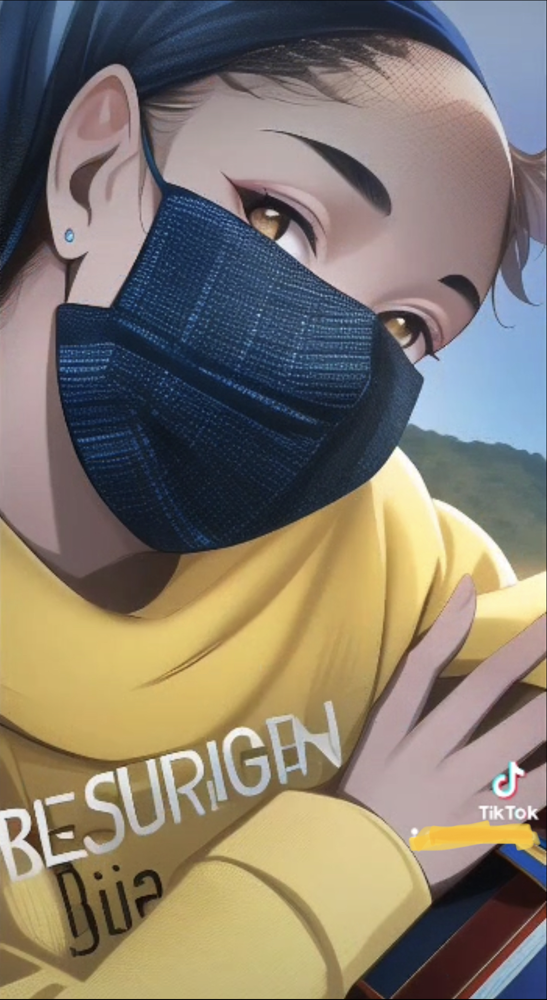

Misión y Visión
Nuestra misión consiste en crear conciencia acerca de el alcance que este tipo de violencia esta teniendo en nuestro país y en el mundo entero.
Queremos un mundo en el cual todos y cada uno de nosotros podamos vivir en paz. Respetando así el derecho más fundamental de todo ser humano: el derecho a la vida.
¿Qué es la violencia con armas de fuego?
La violencia con armas de fuego es una amenaza mundial del derecho más fundamental del ser humano, el derecho a la vida.
La violencia de armas de fuego es la que se comete utilizando un arma de fuego como lo son las pistolas, escopetas, fusiles de asalto, ametralladoras, entre otros.
¿A quién afecta este tipo de violencia?
Este problema afecta a todo tipo de personas sin importar su cultura, raza, país, o género, sin embargo, hay algunas personas mas expuestas que otras. Un ejemplo de esto son las mujeres, las cuáles están más expuestas cuando hay violencia doméstica por parte de la pareja.
Datos Relevantes
- Según un análisis del CDC los homicidios con armas de fuego aumentaron casi un 35% .
- Una encuesta realizada por Everytown for Gun Safety Support Fund y Survey USA arrojo los siguientes resultados: El 59% de los adultos o un conocido o ser querido han experimentado violencia con armas de fuego. De estos 71% son afroamericanos, 60% son latinos y 58% son blancos.
- El Gun Violence Archive contabilizó 693 tiroteos masivos en Estados Unidos en el año 2021.
- Es culpable de algun delito grave, delito menor violento, violencia doméstica, acecho, maltrato a menores, violar la ley de armas de fuego.
- Tiene una enfermedad mental
- Es menor de 21 años
- Es adicto a drogas
- Ha sido declarado mentalmente incompetente por un tribunal
- Ha sido de baja deshonrosamente del ejercito o policía
- Ha pertenecido a un grupo violento
- Ha sido objeto de una orden de protección en los últimos 12 meses
- No es ciudadano o residente legal permanente de los Estados Unidos
- violencia física
- psicológica
- intimidación ó amenazas
- agresión sexual
- Línea Nacional para la Violencia Doméstica 1-800-799-7233.
- Puerto Rico: Línea de Ayuda (24 horas) 939-266-8446.
¿Qué dice la ley sobre esto?
¿Quién puede comprar un arma en los Estados Unidos?
La edad mínima para la compra de un arma larga o un rifle es de 18 años y para adquirir armas de fuego de mano es de 21 años. Sin embargo, en algunos estados como lo son Alaska, Maine, Minnesota y Vermont la edad mínima para comprar un rifle o escopeta es de 16 años de edad.
Para la compra y venta de armas de fuego hay una serie de restricciones que nos protegen de una forma u otra. Es importante que se conozcan para saber cuando una persona puede estar en posesión de un arma de manera ilegal. Una persona no puede tener o comprar un arma cuando:
Si identifica o posee alguno de los puntos mencionado tiene prohibido, segun la Ley Federal para el Control de Armas de Fuego de 1968, recibir, transportar o enviar armas de fuego o munición.
Ley de Armas de Puerto Rico
La misma dicta que una persona sin licencia de armas posee un arma de fuego, es culpable de un delito grave que se puede castigar con una condena de cinco años de carcel. Si la persona carga, usa, muestra, exhibe o agita de forma amenazante el arma de fuego sin una licencia, es culpable de un delito grave que puede ser castigado con una condena de diez años. Estos términos dependen de la naturaleza del crimen cometido, la condena de cárcel puede aumentar o disminuir según estos.
¿Qué puedo hacer en mi comunidad?
Uno de los métodos más simples y eficaces para el control y la prevención de la violencia es la educación. El desarrollo de programas de intervención con personas de alto riesgo de cometer algun delito de armas de fuego puede ser el comienzo para la erradicación de los delitos de esta índole.
Con este proyecto podemos impactar la vida de posibles víctimas de la violencia en nuestro país utilizando la educacion como herremienta principal.
.png)
Otros tipos de violencia
Violencia Doméstica
La violencia doméstica se define como un tipo de violencia que se da entre parejas que actualmente o anteriormente tuvieron una relación consensual. No es necesario que vivan juntas o hayan tenido hijos o hijas en común.
Esta incluye:
Si tú ó alguien que conoces esta pasando por esta situación puede comunicarse con las siguientes fuentes en busca de ayuda:
Únete a la misión
No importa de dónde seas o en que parte del mundo estes, lo importante es que reconocer el impacto de la violencia en nuestro mundo y que hagamos algo al respecto. No hay acción pequeña, cada "granito de arena" cuenta.
Queremos personas conscientes de esta situación y dispuestas a hacer algo al respecto. La educación comienza en el hogar, en el barrio y en la comunidad. Creemos un mundo en dónde podamos vivir y no solo sobrevivir.
Creadora
Hola, mi nombre es Charlian Pacheco Morales y soy de la hermosa isla de Puerto Rico. Tengo 16 años y comencé a crear este proyecto como parte del programa de SOW Coders. Reconozco el impacto que ha tenido y sigue teniendo la violencia en mi país y en el mundo entero por eso decidí que no quiero ser solo una espectadora, sino que quiero trabajar por que haya un cambio, para que nuestras calles sean seguras para todas las personas que pasen por ellas.
Comentarios
Déjanos tus comentarios. Queremos saber de TI.
Nombre
Comentarios